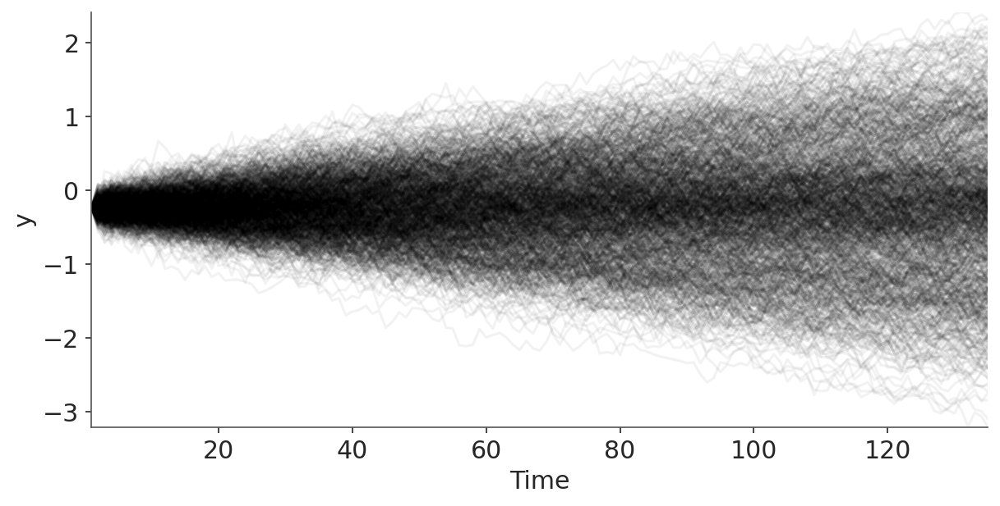
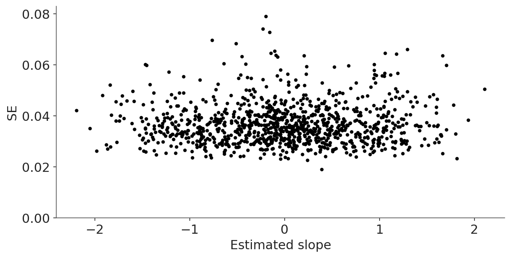
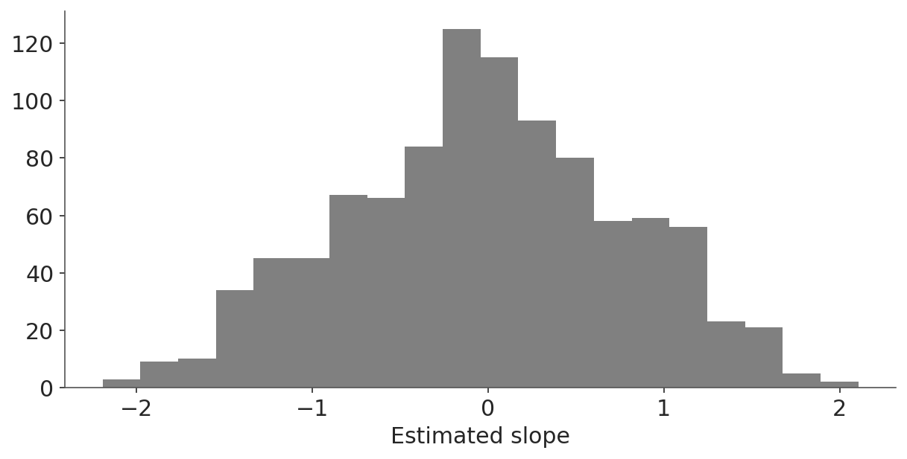

import warnings
import sys
sys.path.insert(0, '..')
import arviz as az
import matplotlib.pyplot as plt
import numpy as np
import pandas as pd
import preliz as pz
import xarray as xr
from scipy.stats import linregress
az.style.use("arviz-variat")
az.rcParams["stats.ci_prob"] = 0.95
plt.rcParams["figure.dpi"] = 75
SEED = 1123
rng = np.random.default_rng(SEED)Mixture model for time series competition
This notebook includes the code for the Bayesian Workflow book Chapter 20 Using a fitted model for decision analysis: Mixture model for time series competition.
1 Introduction
A few years ago someone sent us an email about a “Global Climate Challenge” that he had seen online, and which was introduced as follows:
It has often been claimed that alarm about global warming is supported by observational evidence. I have argued that there is no observational evidence for global-warming alarm: rather, all claims of such evidence rely on invalid statistical analyses.
Some people, though, have asserted that the statistical analyses are valid. Those people assert, in particular, that they can determine, via statistical analysis, whether global temperatures have been increasing more than would be reasonably expected by random natural variation. Those people do not present any counter to my argument, but they make their assertions anyway.
In response to that, I am sponsoring a contest: the prize is $100,000. In essence, the prize will be awarded to anyone who can demonstrate, via statistical analysis, that the increase in global temperatures is probably not due to random natural variation.
How to win the money?
The file
Series1000.txtcontains 1000 time series. Each series has length 135: the same as that of the most commonly studied series of global temperatures (which span 1880–2014). The 1000 series were generated as follows. First, 1000 random series were obtained (via a trendless statistical model fit for global temperatures). Then, some randomly-selected series had a trend added to them. Some trends were positive; the others were negative. Each individual trend was 1°C/century (in magnitude)—which is greater than the trend claimed for global temperatures.
A prize of $100,000 (one hundred thousand U.S. dollars) will be awarded to the first person who submits an entry that correctly identifies at least 900 series: which series were generated by a trendless process and which were generated by a trending process.
But also this:
Each entry must be accompanied by a payment of $10.
Load packages
from cmdstanpy import CmdStanModel, disable_logging
disable_logging()
from utils import print_stan/home/osvaldo/anaconda3/envs/bwb/lib/python3.14/site-packages/tqdm/auto.py:21: TqdmWarning: IProgress not found. Please update jupyter and ipywidgets. See https://ipywidgets.readthedocs.io/en/stable/user_install.html
from .autonotebook import tqdm as notebook_tqdm2 Data
OK, now it’s time to get to work. We start by downloading and graphing the data.
series = np.loadtxt("data/Series1000.txt")
N, T = series.shape
N, T(1000, 135)_, ax = plt.subplots(figsize=(8, 4))
ax.plot(np.arange(1, T + 1), series.T, alpha=0.05, color="k")
ax.set(xlim=(1, T),
ylim=(series.min(), series.max()),
xlabel="Time",
ylabel="y",
);
3 Separate linear regression
Aha! The lines are fanning out from a common starting point. We’ll fit a regression to each line and then summarize each line by its average slope. This is not necessarily the most efficient way to estimate a slope from correlated data, but we will not be concerned about that, as our purpose here is to demonstrate decision analysis in the context of a fitted model, rather than to fit the model in an optimal way.
slope = np.empty(N)
se = np.empty(N)
time = np.arange(1, T + 1)
for n in range(N):
res = linregress(time, series[n])
slope[n] = 100 * res.slope
se[n] = 100 * res.stderrWe multiplied the slopes (and standard errors) by 100 to put them on a per-century scale to match the above instructions.
Next we plot the estimated slopes and their standard errors:
_, ax = plt.subplots(figsize=(8, 4))
ax.plot(slope, se, 'k.')
ax.set(xlabel="Estimated slope", ylabel="SE", ylim=(0, 1.05 * se.max()))[Text(0.5, 0, 'Estimated slope'),
Text(0, 0.5, 'SE'),
(0.0, 0.08304415350889466)]
OK, not much information in the se’s. How about a histogram of the estimated slopes?
_, ax = plt.subplots(figsize=(8, 4))
ax.hist(slope, bins="auto", color="0.5")
ax.set(xlabel="Estimated slope")
Based on the problem description, I’d expect to see distributions centered at 0, -1, and 1. It looks like this might be the case.
4 Stan mixture model
So let’s fit a mixture model. That’s easy. Here’s the Stan model:
mod = CmdStanModel(stan_file="mixture.stan")
print_stan(mod)data {
int K;
int N;
array[N] real y;
array[K] real mu;
}
parameters {
simplex[K] theta;
real sigma;
}
model {
array[K] real ps;
sigma ~ cauchy(0, 2.5);
mu ~ normal(0, 10);
for (n in 1:N) {
for (k in 1:K) {
ps[k] = log(theta[k]) + normal_lpdf(y[n] | mu[k], sigma);
}
target += log_sum_exp(ps);
}
}We sample from the posterior:
data = {"y": slope.tolist(), "K": 3, "N": int(N), "mu": [0, -1, 1]}
fit_mix = mod.sample(data=data, seed=SEED, show_progress=False)
idata_mix = az.from_cmdstanpy(fit_mix)Posterior summary:
az.summary(idata_mix, var_names=["theta", "sigma"])| mean | sd | eti95_lb | eti95_ub | ess_bulk | ess_tail | r_hat | mcse_mean | mcse_sd | |
|---|---|---|---|---|---|---|---|---|---|
| theta[0] | 0.5373 | 0.0216 | 0.5 | 0.58 | 2989 | 3088 | 1.00 | 0.0004 | 0.00028 |
| theta[1] | 0.2387 | 0.0164 | 0.21 | 0.27 | 3110 | 2970 | 1.00 | 0.00029 | 0.00021 |
| theta[2] | 0.224 | 0.0163 | 0.19 | 0.26 | 3076 | 3037 | 1.00 | 0.00029 | 0.0002 |
| sigma | 0.4043 | 0.0182 | 0.37 | 0.44 | 3097 | 2434 | 1.00 | 0.00033 | 0.00024 |
Convergence is fine: \(\widehat{R}\) is close to 1 for everything. The estimated weights of the three mixture components are approximately 0.5, 0.25, 0.25. Given that the problem was made up, I’m guessing the weights of the underlying data-generation process are exactly 1/2, 1/4, and 1/4. The standard deviation of the slopes within each component is 0.4, or close to it. We could also try fitting a model where the standard deviations of the three components differ, but we won’t, partly because the description given with the simulated data described the change as adding a trend, and partly because the above histogram doesn’t seem to show any varying of the widths of the mixture components.
OK, now we’re getting somewhere. To make predictions, we need to know, for each series, the probability of it being in each of the three components. We’ll compute these probabilities by adding a generated quantities block to the Stan program:
generated quantities {
matrix[N, K] p;
for (n in 1:N) {
vector[K] p_raw;
for (k in 1:K) {
p_raw[k] = theta[k] * exp(normal_lpdf(y[n] | mu[k], sigma));
}
for (k in 1:K) {
p[n,k] = p_raw[k] / sum(p_raw);
}
}
}We then re-fit the model, extract the \(p\)’s, and average them over the posterior simulations.
mod = CmdStanModel(stan_file="mixture_2.stan")
fit_mix = mod.sample(data=data, seed=SEED, show_progress=False)
idata_mix = az.from_cmdstanpy(fit_mix)prob = az.mean(idata_mix, var_names=["p"])["p"]We now have a \(1000\times 3\) matrix of probabilities. Click on the data variable p to see some of the probabilities.
prob.round(2)<xarray.DataArray 'p' (p_dim_0: 1000, p_dim_1: 3)> Size: 24kB
array([[0.08, 0. , 0.92],
[0.4 , 0.6 , 0. ],
[0.93, 0.01, 0.06],
...,
[0.25, 0. , 0.75],
[0. , 1. , 0. ],
[0.64, 0.36, 0. ]], shape=(1000, 3))
Coordinates:
* p_dim_0 (p_dim_0) int64 8kB 0 1 2 3 4 5 6 7 ... 993 994 995 996 997 998 999
* p_dim_1 (p_dim_1) int64 24B 0 1 2So, the first series is probably drawn from the sloping-upward model; the second might be from the null model or it might be from the sloping-downward model; the third is probably from the null model and so forth.
We’ll now program this: for each of the 1000 series in the dataset, we’ll pick which of the three mixture components has the highest probability. We’ll save the probability and also which component is being picked.
max_prob = prob.max(dim="p_dim_1")
choice = prob.argmax(dim="p_dim_1")And now we can sum this over the 1000 series. We’ll compute the number of series assigned to each of the three choices:
choice.groupby(choice).count()<xarray.DataArray 'p' (p: 3)> Size: 24B array([564, 229, 207]) Coordinates: * p (p) int64 24B 0 1 2
The guesses are not quite in proportion 0.5, 0.25, 0.25. There seem to be too many guesses of zero slope and not enough of positive and negative slopes. But that makes sense given the decision problem: we want to maximize the number of correct guesses so we end up disproportionately guessing the most common category. That’s fine; it’s how it will be.
And we can compute the expected number of correct guesses (based on the posterior distribution we have here), and the standard deviation of the number of correct guesses (based on the reasonable approximation of independence of the 1000 series conditional on the model). And then we’ll print all these numbers:
expected_correct = max_prob.sum().values
sd_correct = np.sqrt((max_prob * (1 - max_prob)).sum()).values
expected_correct.round(), sd_correct.round(0)(np.float64(855.0), np.float64(10.0))Interesting. The expected number of correct guesses is np.float64(855.0). Not quite the 900 that’s needed to win! The standard error of the number of correct guesses is np.float64(10.0), so 900 is over 5 standard errors away from our expected number correct. That’s bad news!
How bad is it? We can compute the normal cumulative density function to get the probability of at least 900 successes; that’s
p_win = pz.Normal(900, sd_correct).cdf(expected_correct)
p_winarray(5.28890034e-06)That’s a small number; here’s its reciprocal:
recip = 1 / p_win
recipnp.float64(189075.2209981332)That’s almost a 1-in-200,000 chance of winning the big prize!
But we only have to get at least 900. So we can do the continuity correction and evaluate the probability of at least 899.5 successes, which, when inverted, yields:
1 / pz.Normal(899.5, sd_correct).cdf(expected_correct)np.float64(151295.34684038954)Nope, still no good. For the bet to be worth it, even in the crudest sense of expected monetary value, the probability of winning would have to be at least 1 in 10,000. (Recall that the prize is $100,000 but the cost of entry is $10.) And that’s all conditional on the designer of the study doing everything exactly as he said, and not playing with multiple seeds for the random number generator, etc. After all, he could well have first chosen a seed and generated the series, then performed something like the above analysis and checked that the most natural estimate gave only 850 correct or so, and in the very unlikely event that the natural estimate gave 900 or close to it, just re-running with a new seed. We have no reason to think that the creator of this challenge did anything like that; our point here is only that, even if he did his simulation in a completely clean way, our odds of winning are about 1 in 200,000—about 1/20th what we’d need for this to be a fair game.
There is one more thing, though: the data are highly autocorrelated, so least-squares regression may not be the most efficient way to estimate these slopes. If we can estimate the slopes more precisely, we can get more discrimination in our predictions. Maybe there is a way to win the game by extracting more information from each series, but it won’t be easy.
You could say that the above all demonstrates the designer’s point, that you can’t identify a trend in a time series of this length. But we don’t think it would make sense to draw that conclusion from this exercise. After all, you can just tweak the parameters in the problem a bit—or simply set the goal to 800 correct instead of 900—and the game becomes easy to win. Or, had the game been winnable as initially set up, you could just up the threshold to 950, and again it would become essentially impossible to win. Conversely, if the designer of the challenge had messed up his calculations and set the threshold to 800, and someone had sent in a winning entry, it wouldn’t disprove his claims about climate science, it would just mean he hadn’t been careful enough in setting up his bet.
Licenses
- Code © 2022–2025, Andrew Gelman, licensed under BSD-3.
- Text © 2022–2025, Andrew Gelman, licensed under CC-BY-NC 4.0.